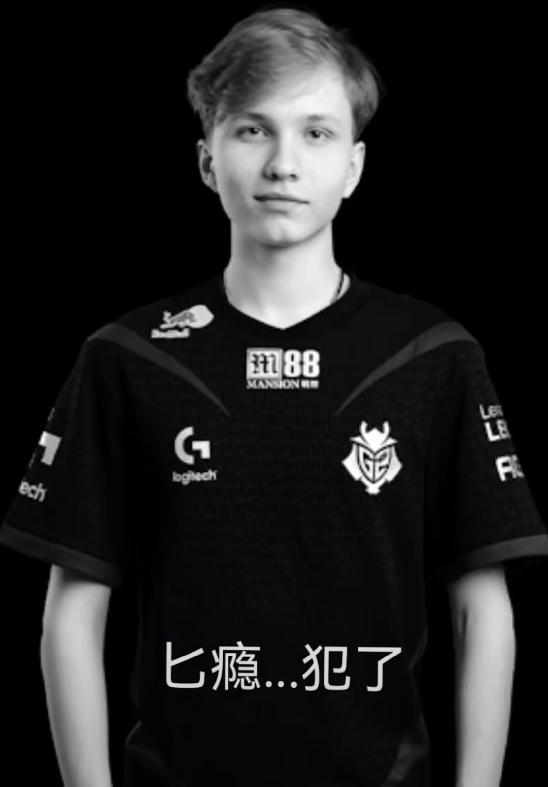
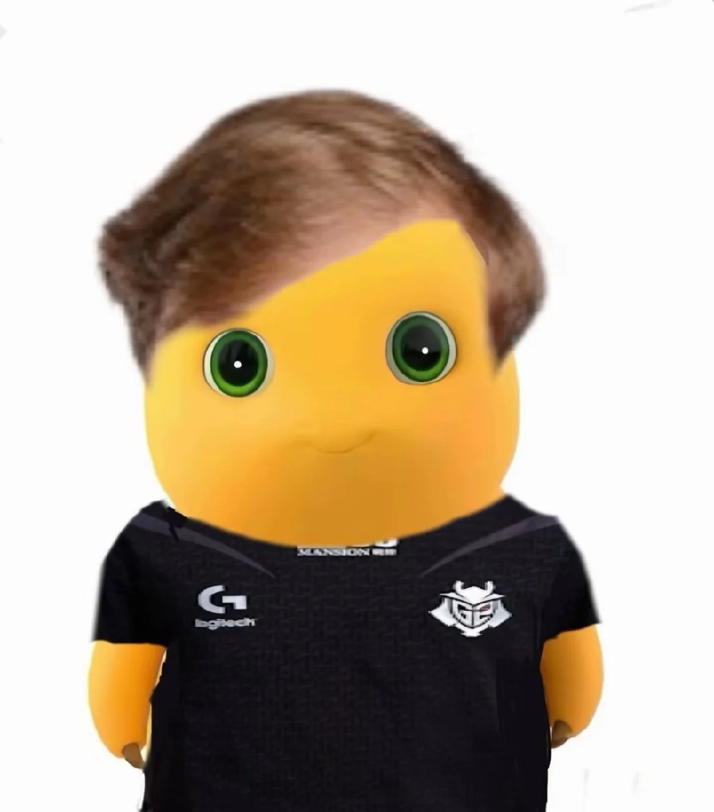

G2-Esport

m0NESY(monesy)是一位来自俄罗斯的天才电子竞技选手，目前效力于G2战队，以其在CS中的出色表现而闻名。
m0NESY，本名Dmitry Vasilyevich Adzhubei，19岁，出生于俄罗斯莫斯科附近的小镇Orekhovo-Zuevo。他从小就展现出了对电子竞技的独特天赋，6岁时开始接触CS 1.6，9岁时开始玩CS，并在10岁时达到了大地球等级。他的哥哥安德烈·奥西波夫是一名狂热的CS玩家，对他的成长影响深远。
m0NESY的职业生涯始于2019年，当时他随NewBALLS战队参加了CIS电竞职业冠军赛。2020年1月，他加入Navi青训队，并在2021年的WePlay青训联赛中表现出色，打出1.64的rating。2022年1月，G2战队以60万美元的转会费将他签下，m0NESY正式开启了一线战队的职业生涯。他在G2的表现依然出色，尤其是在BLAST春季小组赛和IEM卡托维兹等比赛中，展现了其惊人的狙击手天赋和快速反应能力。
m0NESY在比赛中的风格以快速、精准著称，尤其是在inferno地图上1V4的镜头更是被誉为“电光火石”。他的快速反应和精准射击使他成为G2战队的重要成员，并在多项比赛中帮助队伍取得佳绩。
m0NESY在职业生涯中展现了极高的上限和潜力，被认为是有望成为顶级选手的未来之星。他的快速成长和出色表现，使得他在电子竞技界获得了广泛的关注和认可。


